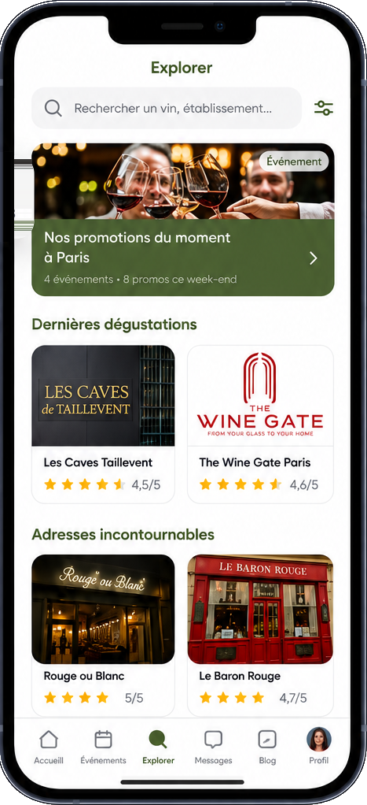
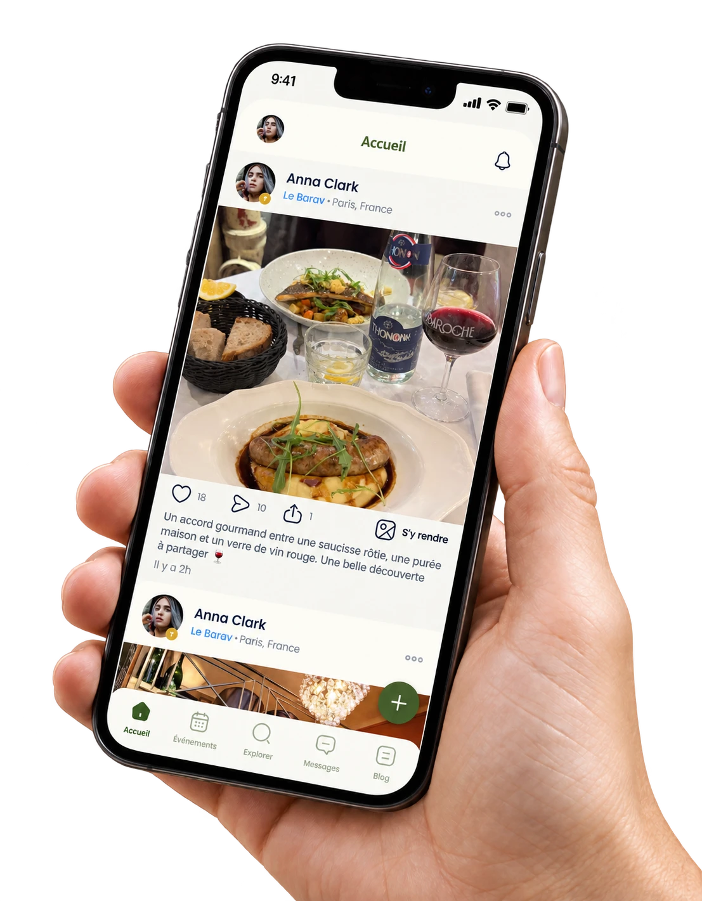
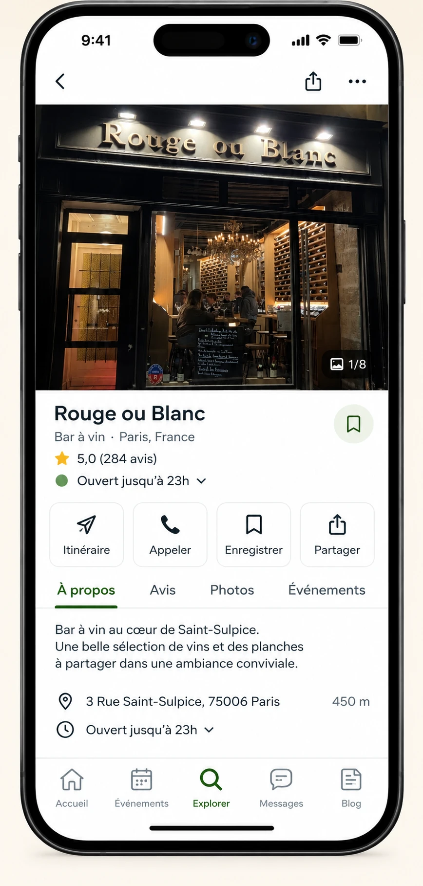
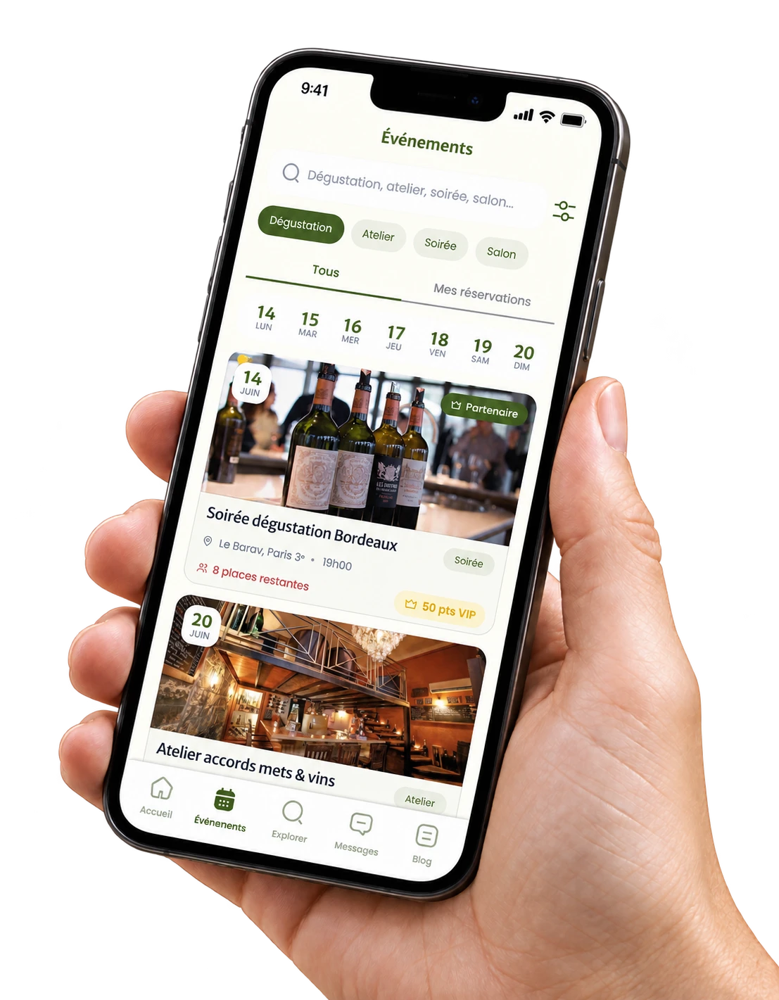
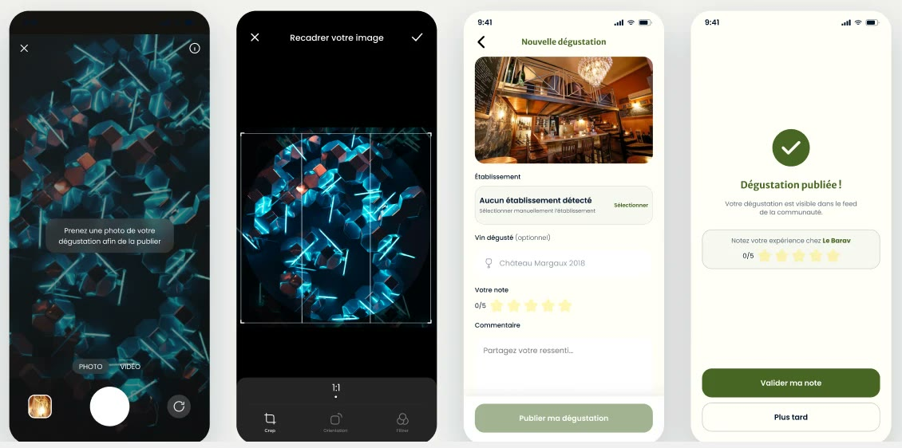
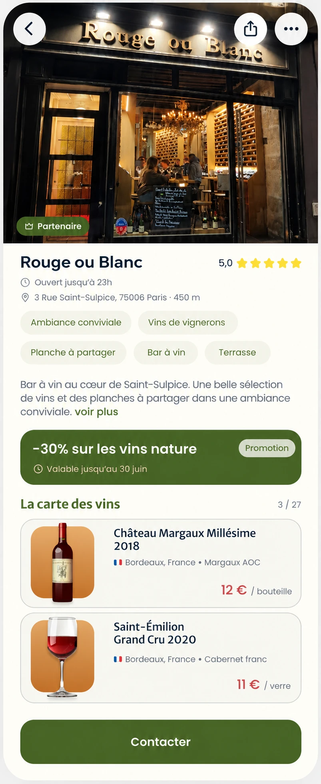

Comment déguster un vin comme un pro (sans se ridiculiser)
Faire tourner son verre, le humer longuement, prononcer des mots mystérieux... la dégustation a parfois une réputation intimidante. En réalité, elle…
Lire l'articleBientôt disponible – Paris
Partagez vos dégustations, rencontrez d'autres amateurs, découvrez des établissements partenaires et gagnez des badges exclusifs.
Téléchargez notre application
Pensé avec des sommeliers et des cavistes indépendants.

L'application
Tout ce qu'un amateur de vin attendait, réuni dans une seule app.

Publiez vos dégustations, vos accords et vos coups de cœur. Likez, commentez et retrouvez l'adresse d'un simple « S'y rendre ».

Bars à vin et cavistes autour de vous, avec leurs avis, leur carte des vins, leurs promotions et l'itinéraire en un geste.

Dégustations, ateliers, soirées, salons : réservez votre place et cumulez des points VIP chez les partenaires.
En 30 secondes
WineShare est né d'un constat simple : les meilleures bouteilles sont celles qu'on nous recommande. L'app rapproche les amateurs de vin des bars à vin et cavistes qui les font vibrer.
Comment ça marche
Votre verre, votre bouteille ou votre planche : recadrez et c'est prêt.
WineShare reconnaît automatiquement le bar ou la cave où vous vous trouvez.
Ajoutez le vin dégusté, votre note sur 5 et votre ressenti. Votre dégustation rejoint le feed.

Bars à vin · Cavistes
Rejoignez WineShare Pro : mettez en avant votre carte des vins, vos promotions et vos événements auprès d'une communauté de passionnés.
Découvrir WineShare Pro →
Le blog
Conseils de sommelier, repères de dégustation et bonnes adresses pour progresser verre après verre.

04 DégustationFaire tourner son verre, le humer longuement, prononcer des mots mystérieux... la dégustation a parfois une réputation intimidante. En réalité, elle…
Lire l'articleFace à un rayon de bouteilles ou une carte des vins, l'étiquette peut vite ressembler à un mystère. Pourtant, une fois les codes compris, elle…
Lire l'articleAdapter son choix de vin aux saisons, c'est aussi suivre le rythme des produits et des envies culinaires. Voici quelques pistes simples pour accorder…
Lire l'article